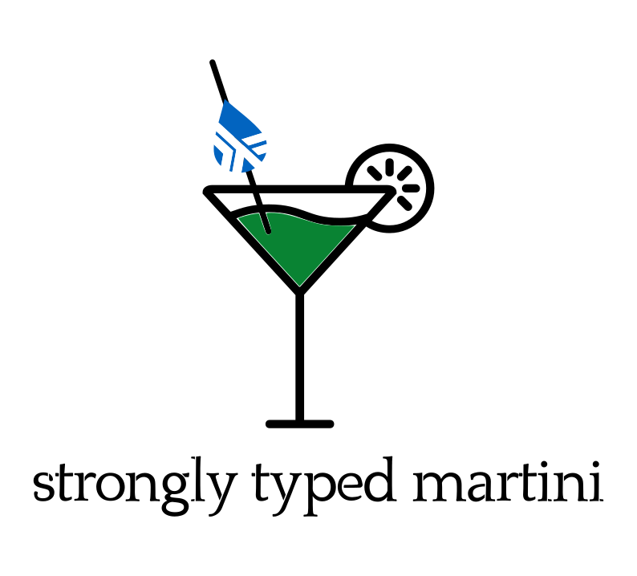

A strongly typed martini.Shaken, not stirred. 🍸
Jan Schulte - Adrian Gonzalez
Guideline
- Goals of this workshop
- Introduction to Haskell
- Introduction to Liquid Haskell
- Let's go
Goals of this workshop

Let's learn you a good
What is ... ?
But wait ... refinement types?
Refinement Types = Types + Predicates
Refinement types allow us to decorate types with logical predicates
Let's go
github.com/janschultecom/20181025-strongly-typed-martini
the glasses
tumbler
cocktail glass
highball
the shaker
boston
french